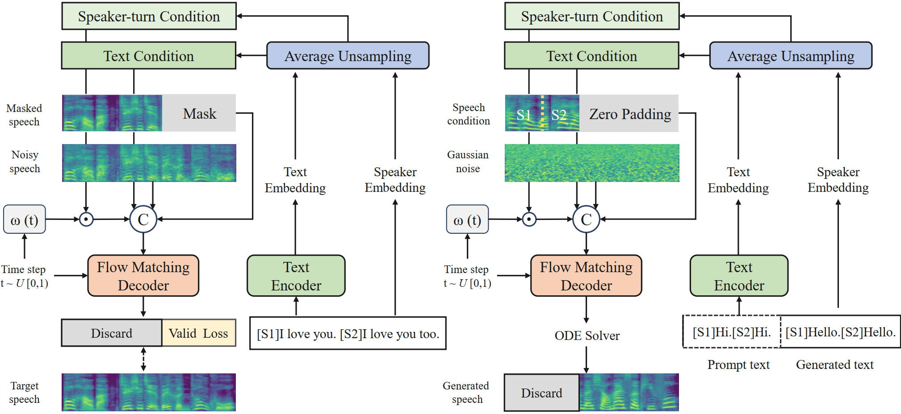

Disentangled Speaker Flow with Time-Decayed Conditioning for Dialogue Text-to-Speech
Abstract
Dialogue synthesis requires modeling speaker transitions while maintaining high linguistic accuracy.
Existing text-to-speech frameworks often face a trade-off between computational efficiency and controllability,
resulting in either high implementation costs or limited flexibility in speaker transitions.
In this work, building upon ZipVoice-Dialog, we propose a speaker modeling strategy that disentangles
the speaker-turn condition from linguistic representations in the flow matching process. We also introduce
a time-dependent decay mechanism that progressively reduces the influence of the speaker-turn condition along
the trajectory, allowing early steps to preserve speaker traits while later steps emphasize linguistic refinement.
This dynamic modulation mitigates speaker-content interference and stabilizes cross-turn transitions without
increasing model complexity. Experiments demonstrate improved controllability, competitive performance,
and strong generalization capability.
Model Overview

Architecture: The training stage (left) with conditional flow matching and the inference process (right) using an ODE solver.
Dialogue Generation (Chinese)
| Prompt S1 | Prompt S2 | Dialogue Text | Ours | ZipVoice-Dialog | FireRedTTS2 | MOSS-TTSDv0.7 | VibeVoice-1.5B |
|---|---|---|---|---|---|---|---|
| [S1]你好，今天过得怎么样？ [S2]还不错，刚完成了一些工作。你呢？ [S1]我也差不多，不过有点累了。你午饭吃了什么？ [S2]吃了个沙拉，挺清淡的。你呢？ [S1]我吃了汉堡，可能今天得加倍锻炼了哈。 [S2]看来你是得好好动起来了。 | |||||||
| [S1]好骄傲呀。 [S2]其实确实就是根据他们的那种曲调想填输入的词，那个感觉会有和他们有一点心灵相通的感觉。 [S1]对尤其是你写那个词的话你，因为是你自己写的话你就会觉得嗯更加的有成就感，然后感觉跟他们离了更进一步有没？ [S2]对对对就是有，会有这种感觉。 |
Dialogue Generation (English)
| Prompt S1 | Prompt S2 | Dialogue Text | Ours | ZipVoice-Dialog | FireRedTTS2 | MOSS-TTSDv0.7 | VibeVoice-1.5B |
|---|---|---|---|---|---|---|---|
| [S1]Hello girl. [S2]So what do you spend your money on? [S1]Uh,well, obviously food, clothing, and many things like that. [S2]You spend your- Don't your parents do that? [S1]Well. | |||||||
| [S1] What kind of, um, what's your favorite kind of food, I guess? [S2]Favorite kind of food? Uh, maybe like barbecue, like steak or something, probably. [S1]Have you spent, do you spend money? [S2]Anything meat. [S1]Meat. [S2]Yeah, there we go. I spend my own money on boba sometimes. |
Speaker Controllability
The baseline model (ZipVoice-Dialog) tends to rely on the fixed temporal order of the spliced prompts, often failing to follow explicit speaker labels when the turn-taking pattern changes. In contrast, our model demonstrates true Label-Driven Controllability. By disentangling the speaker-turn condition, our model can accurately switch speakers based on the assigned labels (e.g., [S1] or [S2]) regardless of the original prompt sequence. This proves that our framework has successfully learned to model speaker identity through labels rather than simply relying on turn-based heuristics.
| Prompt S1 | Prompt S2 | Dialogue Text | Ours | ZipVoice-Dialog |
|---|---|---|---|---|
| [S2] What kind of, um, what's your favorite kind of food, I guess? [S1]Favorite kind of food? Uh, maybe like barbecue, like steak or something, probably. [S2]Have you spent, do you spend money? [S1]Anything meat. | ||||
| [S1] What kind of, um, what's your favorite kind of food, I guess? [S1]Favorite kind of food? Uh, maybe like barbecue, like steak or something, probably. |